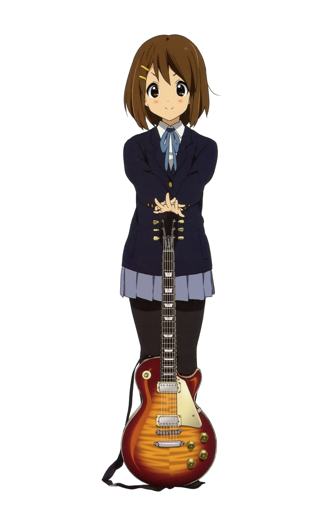
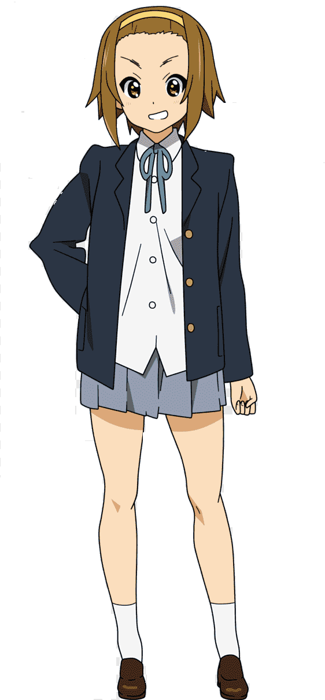

ㅤㅤ ㅤㅤ
K-ON! (けいおん!, Keion!?) es una serie de manga en cuatro paneles escrito e ilustrado por Kakifly. Se comenzó a serializar en la revista seinen Manga Time Kirara de la editorial Hōbunsha desde mayo de 2007 y también se ha serializado en la revista bimestral Manga Time Kirara Carat de Hōbunsha a partir de octubre de 2008. Una adaptación al anime de 13 episodios ha sido realizada por Kyoto Animation y fue emitida entre abril y junio de 2009. Una segunda temporada de 26 episodios, titulada K-ON!! (con dos signos de exclamación) fue emitida entre abril y septiembre de 2010. El título de la serie proviene del nombre japonés para la música ligera keiongaku (軽音楽, 'keiongaku'?). Pero no debe confundirse con la música ligera tal como se conoce en Occidente, más bien se refiere a música contemporánea o música pop.
La historia base se centra en cuatro chicas que asisten a su primer año de preparatoria, en donde tenemos a Yui Hirasawa y su impaciencia en la búsqueda de un club del cual participar. Por otro lado tenemos a Ritsu Tainaka (baterista) quien le propone a su mejor amiga Mio Akiyama (bajista), inscribirse juntas en el club de música ligera del instituto, pero desafortunadamente se enteran que está próximo a ser cerrado debido a que todos sus miembros se habían terminado de graduar el año anterior. Debido a que el mínimo permitido para aprobar un club es de 4 integrantes, Ritsu y Mio tratan desesperadamente de conseguir que el club no sea cerrado, por lo que en el intertanto lograrán reclutar a Tsumugi Kotobuki quien les indica que solo sabe tocar Teclado. Esto significa que solo hace falta un miembro más para tener nuevamente el club en funcionamiento y es aquí donde luego de una larga espera Yui se decide finalmente por un club, precisamente el de música ligera y con esto salvándolo de la extinción. Desafortunadamente el club requiere de la pieza clave de toda banda musical: el guitarrista, y Yui no tiene experiencia alguna con ningún instrumento.
Conoce un poco mas o a los personajes
YUI HIRASAWA

Ritsu Tainaka

Mio Akiyama
Tsumugi Kotobuki

Azusa Nakano